零基础zemax入门教程
本文旨在用最少的知识点呈现一个完整的Zemax镜头专利模拟分析流程。文中专利的获取有很多其他方法，这里仅呈现个人认为较为简单便捷的一条工作流。
安装ZEMAX
安装链接
通过百度网盘分享的文件：ANSYS Ze…
链接:https://pan.baidu.com/s/1c6drwaMGYwT1Wlh6bGIg3g?pwd=xpx3
提取码:xpx3
复制这段内容打开「百度网盘APP 即可获取」
安装教程
1、卸载旧版本，特别是ANSYS License Manager；
2、安装ANSYS License Manager 2024；
3、复制破解文件夹Shared Files和v241到软件安装目录覆盖原文件：C:\Program Files\Ansys Inc\
4、运行开始菜单中的：ANSYS, Inc. License Manager > ANSYS License Manager > ANSYS License Management Center，点击“Get System Hostid Information”
5、用记事本打开“license.txt”，将其中的XXXXXXXXXX替换上一步得到的HOSTID
6、第4步打开的ANSYS License Management Center中点击"Add a License File" > “Choose File” ，浏览添加上一步修改的license.txt，然后点击INSTALL LICENSE FILE；
7、双击运行“SolidSQUADLoaderEnabler.reg”导入注册表信息；
8、右键我的电脑(计算机/此电脑)—属性—高级系统设置—环境变量，创建系统环境变量；
- 变量名：ANSYSLMD_LICENSE_FILE
- 变量值：1055@localhost
9、重启系统
10、安装ANSYS Zemax OpticStudio 2024；
11、安装Ansys_Optics_Launcher_2024R1；
12、复制破解文件夹ANSYS Optics和到软件安装目录替换原文件：C:\Program Files\Ansys Inc\
13、复制破解文件夹Ansys Zemax OpticStudio 2024 R1.00和到软件安装目录替换原文件：C:\Program Files\
14、ANSYS Zemax OpticStudio 2024 破解完成。
镜头专利获取
- 打开Optical Bench Hub (photonstophotos.net)。
- 在库里找到自己想要模拟的镜头。
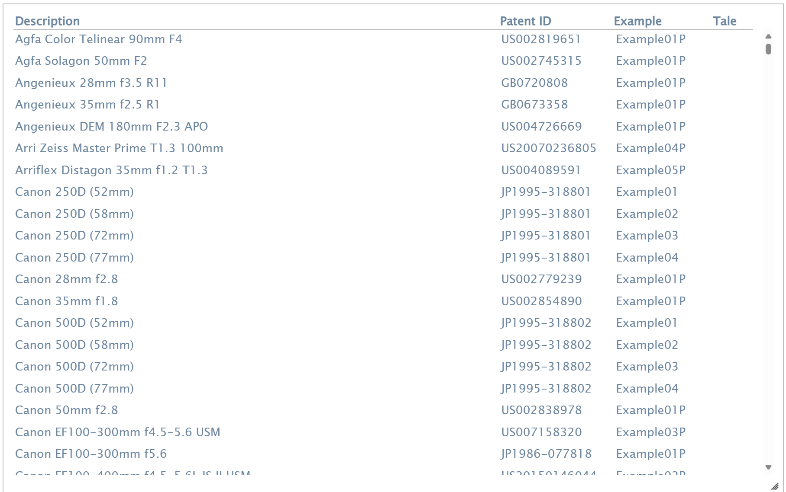 - 这里以Canon EF 50mm f/1.0L USM为例进行示范。点击镜头名称进入详情页面，复制其"Title"后面的Patent ID为"US 4,717,245".
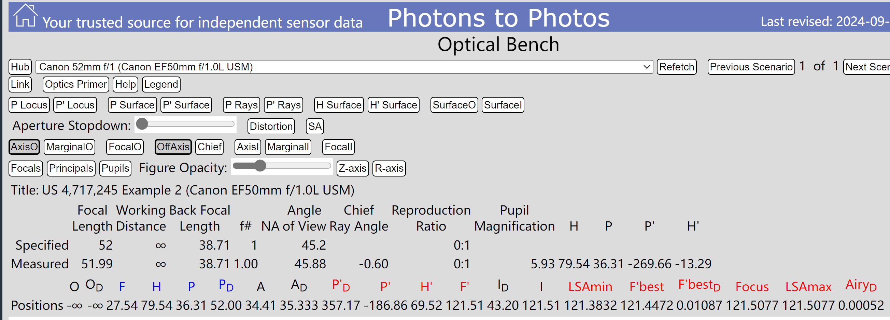 - 使用Google Patents等专利搜索工具搜索对应的Patent ID. 这里搜索到了完全匹配的结果，标题为“High relative aperture Gauss type lens”。注意，镜头专利的标题不会直接标明镜头的商业名称。点击Download PDF下载该镜头的专利文件。
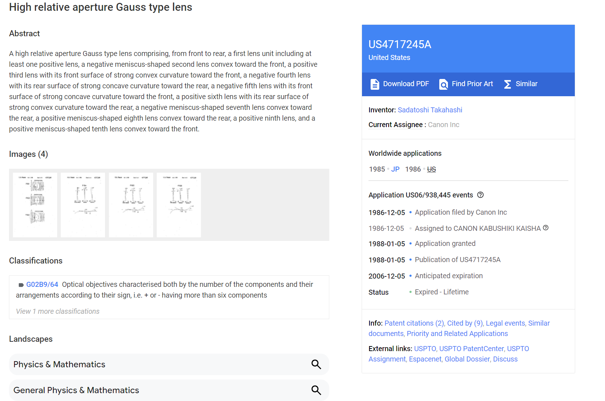 - 观察刚刚Optical Hub页面Title后面给出的信息，符合实物的专利实施例是Example 2。在下载的PDF里面找到Example 2的数据。此即该镜头对应的光学专利。一些镜头会有完全匹配的专利，而另一些可能会与实物有些许出入。此时就需要自行在Zemax里进行优化。
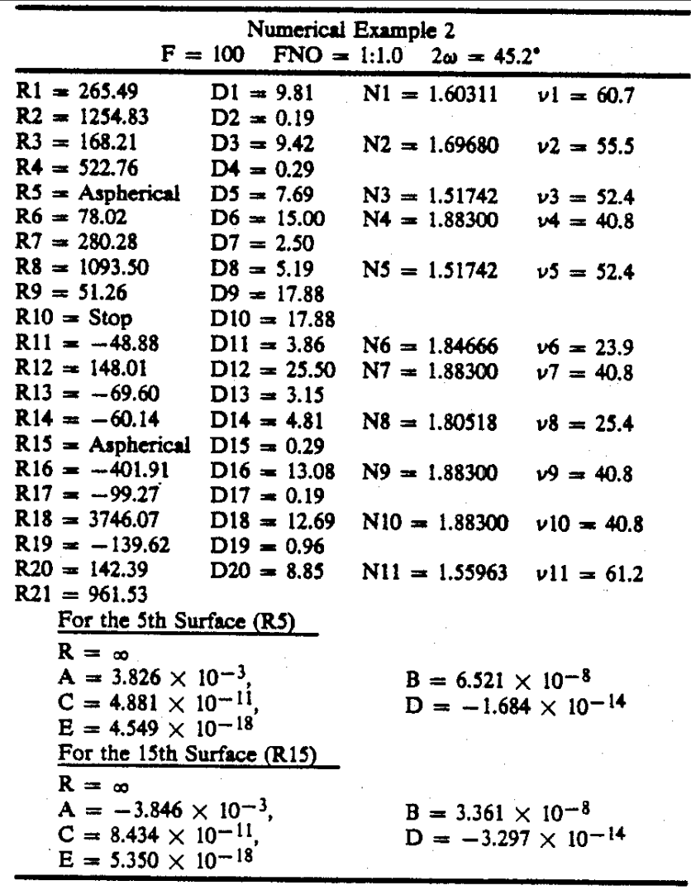
Zemax模拟专利
- 仍然以上文提到的Canon EF 50mm f/1.0L USM为例。首先打开Zemax License Management Center，点击绿色的start。如果已经显示"The license manager is running"则不需要操作。
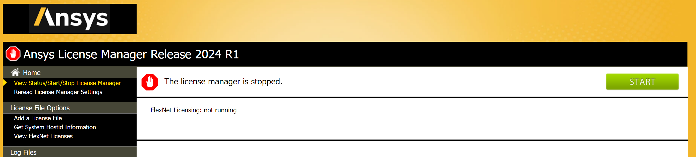 - 打开Ansys Zemax OpticStudio。如果需要中文界面，点击Setup-Opticstudio Preferences-General-Language 改成中文界面。现在的界面应该如图所示。
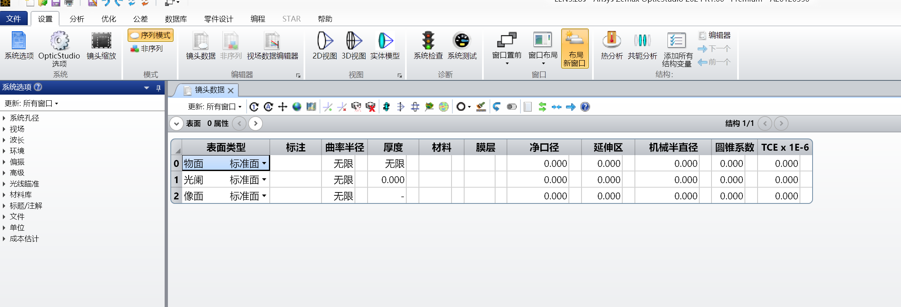 - 设置基本的光学信息。我们模拟的镜头光圈为f/1.0，在界面左侧的系统孔径一栏设置相应的参数。
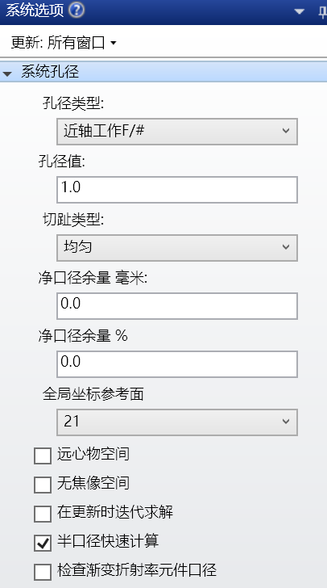 - 设置视场信息。视场信息相当于模拟传感器上取样的点，即我们希望观察这个镜头在成像面上哪个位置的信息。此处该镜头为全画幅镜头，而全画幅传感器对角线大约为43.2mm，所以我们只需要关注距离中心0~21.6mm的信息即可。打开视场数据编辑器，类型选择实际像高，在Y一栏打上6个观测点，如图所示。
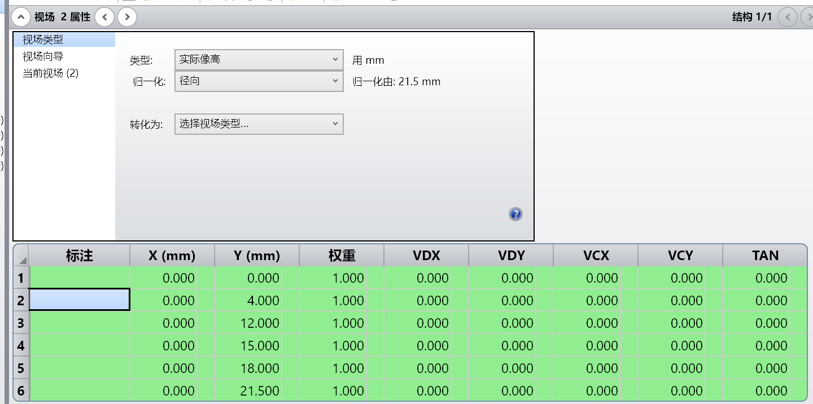
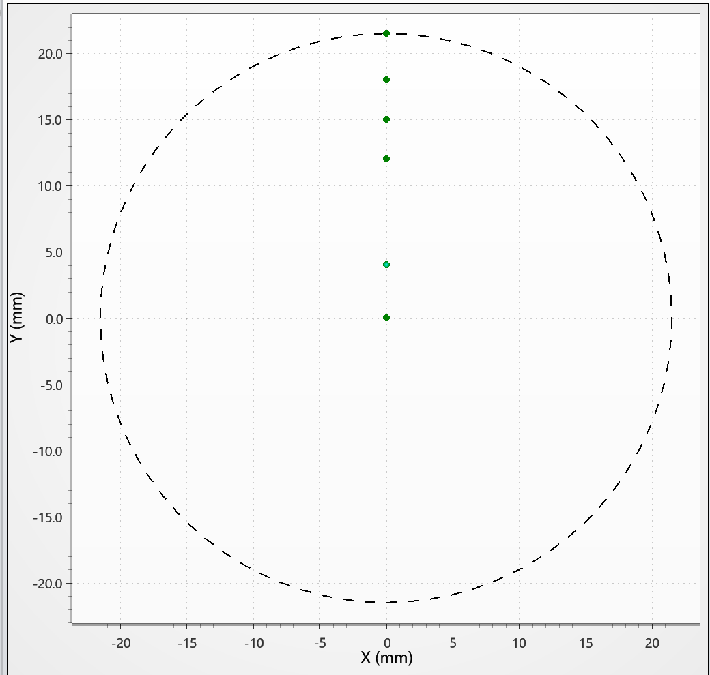 - 继续设置波长信息。波长信息代表的是我们使用什么样的波长的光线来模拟我们的光学系统。选为“F,d,C(可见)”或者"明视觉"即可。
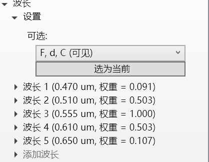 - 现在输入专利中的信息。专利中每一个序号代表一个光学面的信息，其中代表这个面的曲率半径， 代表这个面的厚度，代表这个面后介质的折射率，代表阿贝数（衡量色散的大小）。可以观察到一共有21个光学面。其中后面如果显示Asperical，代表此面镜片是非球面镜片，其具体参数要在下面寻找。在最下方的非球面镜片参数中，ABCDE分别代表偶次非球面系数（分别是2、4、6、8、10阶的系数）。“Stop”代表这一面是光圈所在的位置。
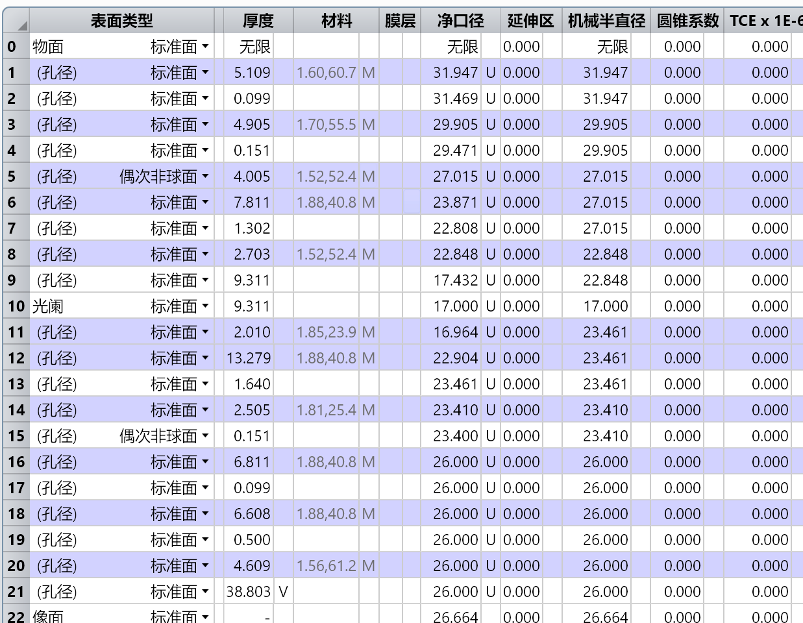 - 在Zemax的“镜头数据”中随便单击一个单元格，使用Ins快捷键或者“右键-插入表面”，直到光学面的总数为21，此时应该一共有23个面的数据（21个光学面+像面+物面）。依次输入专利中的数据。如果是光学表面是标准球面或者是光圈所在位置，在表面类型选择“标准面”。如果是非球面，在前面选择“偶次非球面”。如果该表面是光圈，双击该表面所在行，在上放的下拉菜单中设置“使此表面为光阑”。
- 输入材料时，点击每个材料单元格右边的小方格，选择“模型”，然后输入对应的折射率和阿贝数。
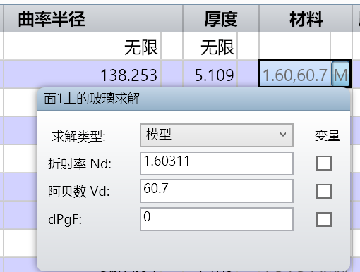 - 非球面镜片的参数按顺序输入表格最右边。
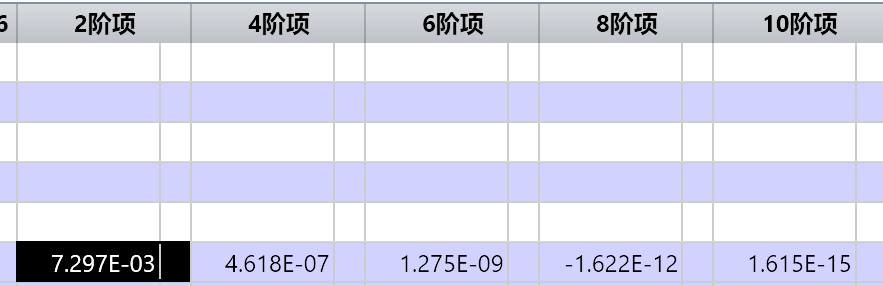 - 现在设置基本的像面信息。注意到专利数据中表面（即最后一个光学面）是没有给厚度的。这里厚度的意义就是最后一片镜片到传感器的距离。点击上方菜单-优化-快速聚焦，可以自动计算出合焦时的距离。
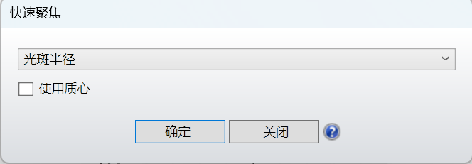 - 点击设置-2D视图，可以看到此时镜头的结构图，可以将其与官方的结构图对比。
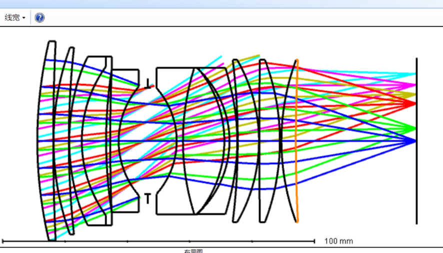 - 点击“分析”菜单，即可查看各种光学像差图。
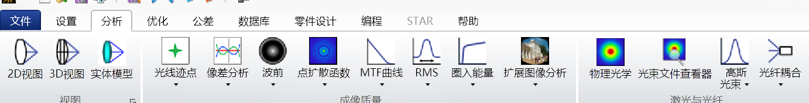 - 以MTF为例，示例效果如下。其他光学像差也可以自行查看。
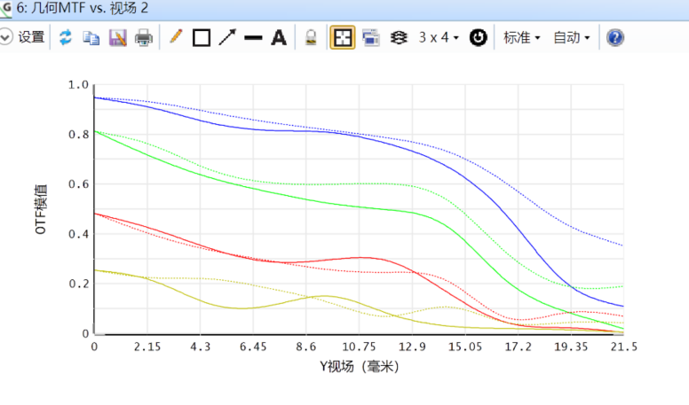 - 关于各光学像差的意义和分析超出了本文的范围，可以自行参考网上教程或教科书。推荐教程：像差图怎么看：关于我的Zemax截图的简要介绍 - 知乎 (zhihu.com)，如何看懂我的ZEMAX专利模拟 - 知乎 (zhihu.com)。